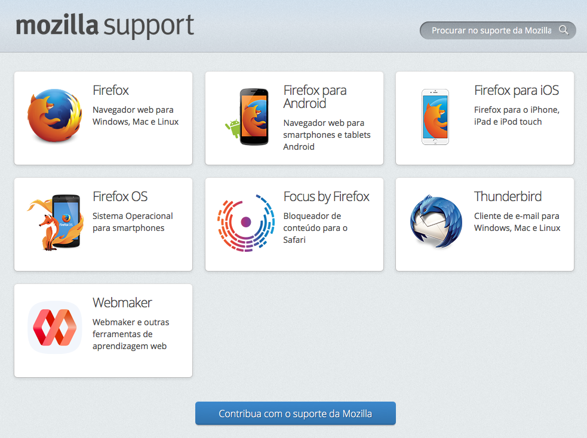
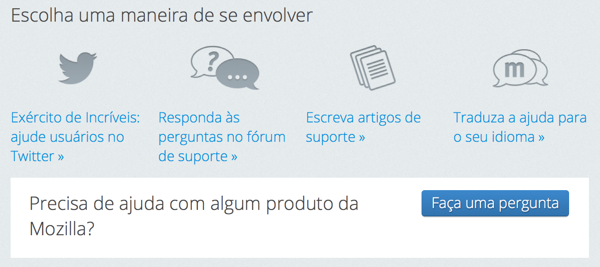
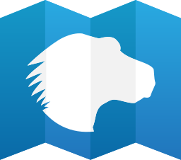
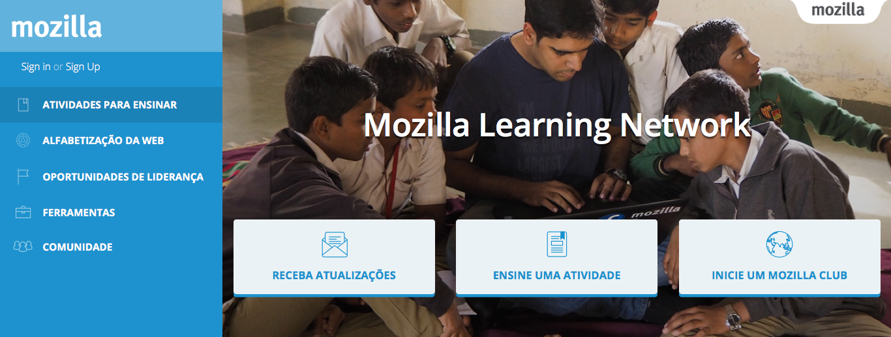
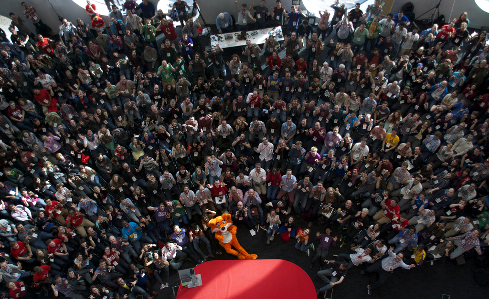
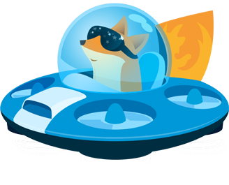

Como contribuir com a Mozilla

Maneiras de contribuir com a Mozilla
- Fazendo algo para melhorar os projetos Mozilla
- Envolvendo-se com a comunidade
A melhor maneira é fazer ambos :)
Por que estar em comunidade?
- Formar sua identidade
- Compartilhar conhecimento
- Ajudar e ser ajudado
- Aprender trabalho em equipe
- Networking
O que é a Mozilla?
- Organização sem fins lucrativos
- Internet como um recurso global: aberta e acessível
- Pessoas primeiro (moldando a internet)
- Segurança e Privacidade
- FLOSS
- Transparencia e Colaboração
O que a Mozilla Brazil faz?
- Contribui com a missão Mozilla
-
Inspirar e emancipar pessoas
- a abraçar a missão
- a colaborar com produtos e projetos Open Source
- Fazer o que uma comunidade faz:
- Unir forças rumo aos objetivos
- Compartilhar conteúdo
- Facilitar a contribuição (ex: compartilhando canais de colaboração)
Como manter contato?
- Oficial: Discourse - https://discourse.mozilla-community.org/c/mozilla-brasil
-
Não official:
- Mozilla Brasil - https://telegram.me/mozillabr
- SUMO - https://telegram.me/SumoBrasil
- WoMoz - https://telegram.me/WoMozBrasil
- Infra - https://telegram.me/mozinfra
- MDN Brasil - https://telegram.me/MDNBrasil
- Connected Devices - Não tem uma URL bonita
- MDN Brasil - https://telegram.me/foxfooding
- Para mais, veja as discussões no discourse.
Redes sociais?
Quem somos?
"Nós somos programadores, advogados, cientistas, designers, estudantes... Somos pessoas comuns que lutam para garantir a sua liberdade e o direito de expressão."

Manifesto Mozilla
https://www.mozilla.org/pt-BR/about/manifesto/
Principais Projetos Mozilla
https://support.mozilla.org/
Ajudar as pessoas com suas dúvidas em relação aos produtos ou serviços Mozilla
SUMO - SUpport MOzilla
https://support.mozilla.org/
SUMO - SUpport MOzilla
https://support.mozilla.org/
Mozilla Developer Network
https://developer.mozilla.org/
Mozilla Learning Network
https://teach.mozilla.org/
Firefox Student Ambassadors

https://wiki.mozilla.org/Brasil/Firefox_Student_Ambassadors
Firefox Student Ambassadors
- Promover o Firefox (Desktop, Android e iOS)
- Lançar produtos e projetos da comunidade
- Ensinar às pessoas a missão Mozilla
- Ensinar a Web
- Ajudar o mundo a ser um lugar melhor
RUST

https://www.rust-lang.org/
http://rustontherocks.org/
Mozilla Quality Assurance
https://quality.mozilla.org/
WoMoz
https://womoz.mozillabrasil.org.br/
Um projeto aberto e sem fins lucrativos criado e mantido por voluntários que buscam o empoderamento feminino na área da Tecnologia.
Empoderamento é incentivar a participação, aprendizado colaborativo e, acima de tudo, dar voz às mulheres.
Connect Devices
(Dispositivos Conectados)
Localização

https://wiki.mozilla.org/Brasil/L10n
Categoria l10n no Discourse
Organização de eventos
Guia de Início - Organização de Eventos
Palestrando


Reportando bugs
Onboarding
Engajamento de novos membros
Mozillian
Lista de todos os indivíduos e grupos que participam do projeto Mozilla. Nós nos chamamos de Mozillians e é aqui que nos encontramos e trocamos ideias.